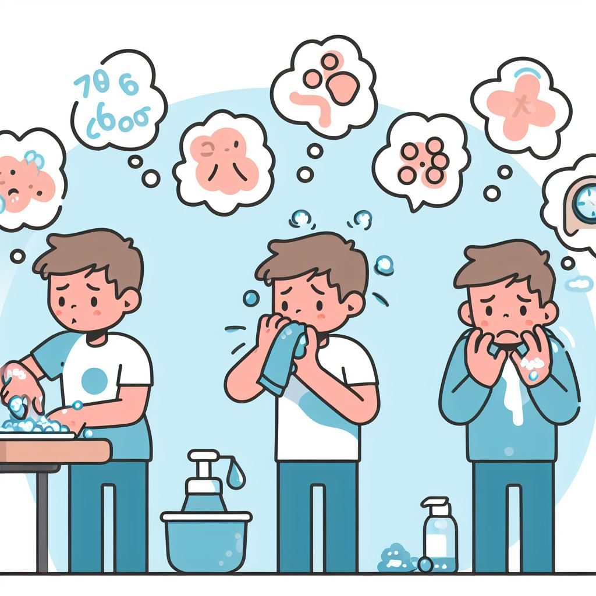
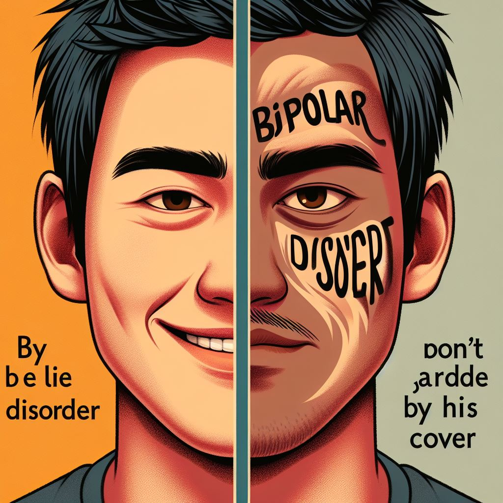
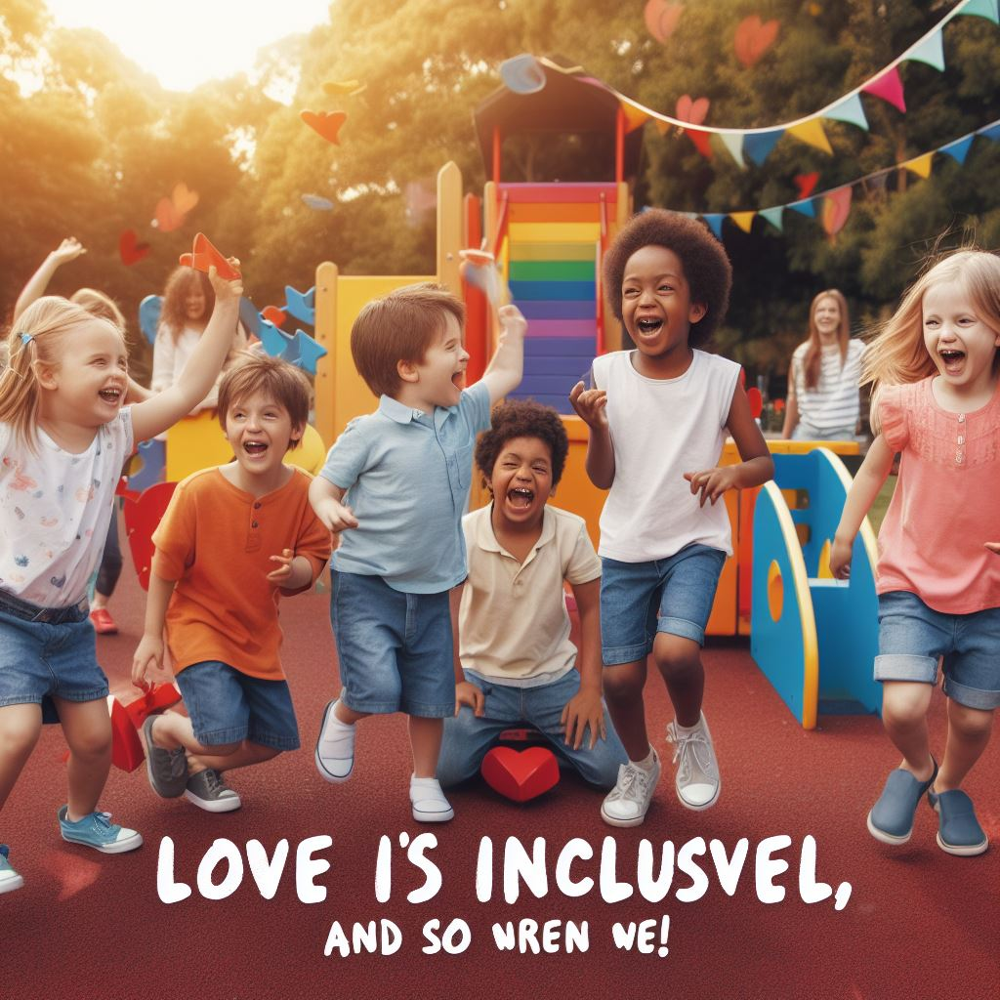
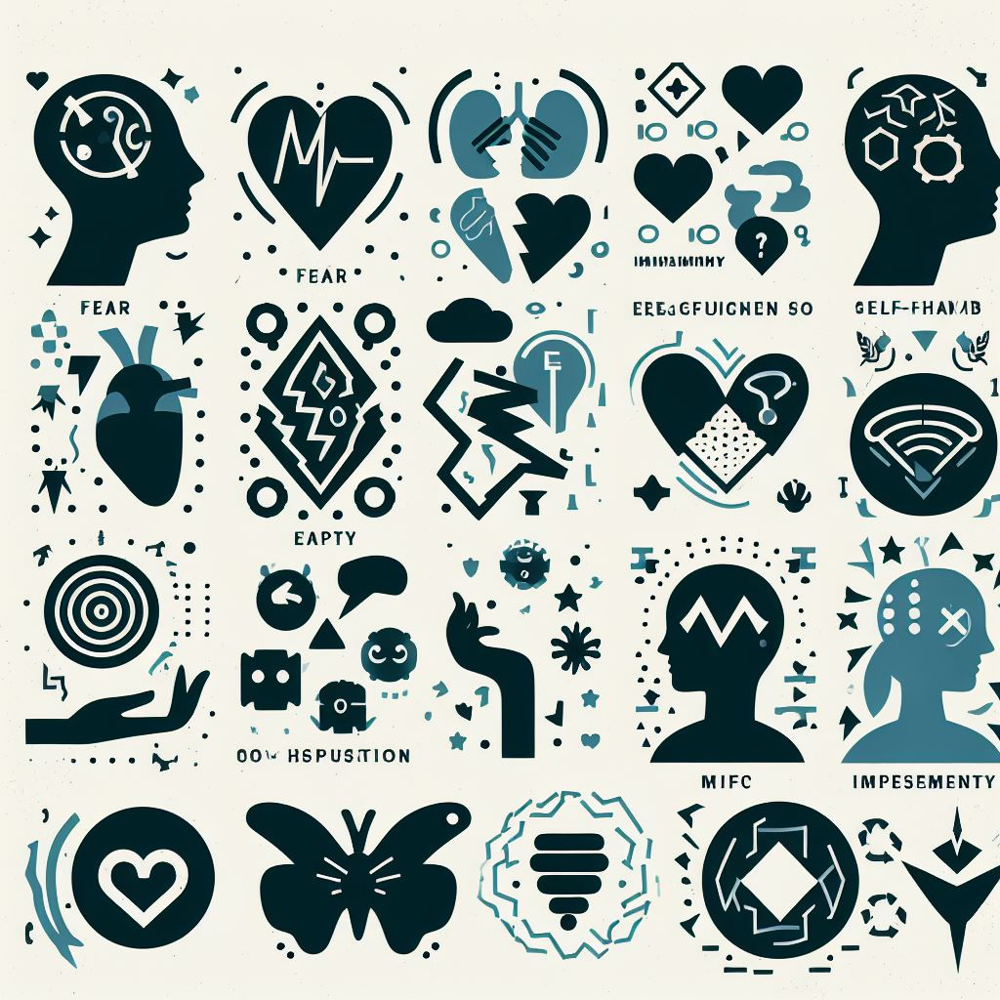
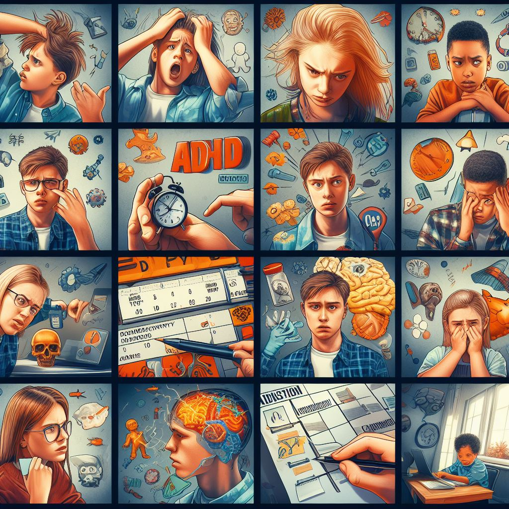

El trastorno obsesivo compulsivo (TOC) es un trastorno mental que se caracteriza por la presencia de
pensamientos intrusivos y repetitivos que causan ansiedad o malestar (obsesiones) y de comportamientos o
rituales que se realizan para aliviar esa ansiedad (compulsiones). Las personas con TOC no pueden
controlar ni detener sus obsesiones y compulsiones, lo que afecta negativamente a su calidad de vida y a
su funcionamiento social, laboral o académico. Algunos ejemplos de obsesiones son el miedo a los
gérmenes, la duda, la necesidad de orden o la agresividad. Algunos ejemplos de compulsiones son el
lavado de manos, la comprobación, el conteo, el ordenamiento o la repetición.
El trastorno de ansiedad es un trastorno mental que se caracteriza por la presencia de miedo,
nerviosismo, preocupación o inquietud excesivos e irracionales ante situaciones cotidianas. Las personas
con trastorno de ansiedad experimentan síntomas físicos, cognitivos y emocionales que interfieren con su
funcionamiento normal y su bienestar. Algunos síntomas comunes son: taquicardia, sudoración, temblores,
dificultad para respirar, sensación de ahogo, náuseas, mareos, pensamientos negativos, catastrofistas o
anticipatorios, dificultad para concentrarse, irritabilidad, inseguridad, evitación de las situaciones
que provocan ansiedad, etc.
La depresión es un trastorno mental que se caracteriza por un estado de ánimo bajo, una pérdida de
interés o placer por las actividades que antes se disfrutaban, y una disminución de la autoestima y la
confianza en uno mismo. La depresión puede afectar a la salud física, mental, emocional y social de las
personas, y puede tener consecuencias graves si no se trata adecuadamente. La depresión puede
manifestarse de diferentes formas, según la edad, el género, la personalidad y la cultura de cada
persona.

El trastorno bipolar es un trastorno mental que se caracteriza por la presencia de cambios extremos en
el estado de ánimo que comprenden altos emocionales (manía o hipomanía) y bajos emocionales (depresión).
Estos cambios pueden afectar el sueño, la energía, el nivel de actividad, el juicio, el comportamiento y
la capacidad de pensar con claridad. Los episodios de cambios en el estado de ánimo pueden ocurrir en
raras ocasiones o muchas veces por año. Aunque la mayoría de las personas presenten síntomas emocionales
entre los episodios, es posible que algunas no presenten ninguno.

Los trastornos generalizados del desarrollo (TGD) son un grupo de trastornos que se caracterizan por
retrasos o alteraciones en el desarrollo de las habilidades de comunicación, interacción social y
comportamiento. Estos trastornos afectan a la forma en que las personas perciben, procesan y responden a
la información del mundo que les rodea. Los TGD suelen manifestarse antes de los tres años de edad y
pueden tener diferentes grados de severidad y de afectación en cada persona.

El trastorno de límite de personalidad es un trastorno mental que se caracteriza por la inestabilidad
del estado de ánimo, el comportamiento, la autoimagen y las relaciones interpersonales. Las personas con
este trastorno tienen dificultades para regular sus emociones, lo que les lleva a experimentar cambios
bruscos de humor, impulsividad, ira, ansiedad, depresión y sentimientos de vacío. También tienen un
miedo intenso al abandono, real o imaginario, y pueden mostrar conductas autodestructivas, como
autolesiones o intentos de suicidio.

El trastorno de déficit de atención e hiperactividad (TDAH) es un trastorno mental que se caracteriza
por una combinación de problemas persistentes, como dificultad para prestar atención, hiperactividad y
conducta impulsiva. Las personas con TDAH pueden tener problemas para concentrarse, organizarse,
planificar, seguir instrucciones, controlar sus impulsos, regular sus emociones y adaptarse a las normas
sociales. Estos problemas pueden afectar negativamente a su rendimiento académico, laboral, familiar y
personal, así como a su autoestima y bienestar.
La esquizofrenia es un trastorno mental grave que afecta la forma en que una persona percibe, piensa y
se comporta. Las personas con esquizofrenia pueden tener alucinaciones, delirios, pensamiento
desorganizado, comportamiento anormal y síntomas negativos, que interfieren con su funcionamiento diario
y su calidad de vida. La esquizofrenia suele aparecer en la adolescencia o en la edad adulta temprana, y
puede tener diferentes grados de severidad y de afectación en cada persona.